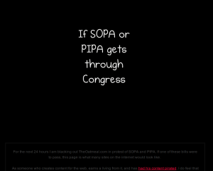
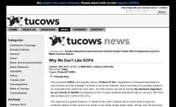

Some of the biggest sites in the internet are currently calling US citizens up to protest. SOPA - the Stop Online Piracy Act - is endangering some key aspects of the internet.
I am a little bit disappointed that Google had no special doodle today and twitter had no message at all ☹ Well, at least did Google offer some information.
Here is a neat explanation of SOPA:
Wikipedia
Completely blacked out:
{kind=link}
Twitter: #WikipediaBlackout
By the way, if you disable JavaScript you can view Wikipedia as always.
German Wiki
{kind=link}
The Oatmeal
The Oatmeal has also completely blacked out its website:
{kind=link}

Zachstronaut
zachstronaut.com offers an interactive one:
{kind=link}
Boing Boing
Boing Boing is completely blacked out:
{kind=link}
Tucows
Tucows - a site with $80.939 million USD revenue - offers some information and a link on the top. They normally offer shareware and freeware:
{kind=link}

Notes
Many big companies (AOL, eBay, Facebook, Google, LinkedIn, mozilla, twitter, Yahoo, zynga) wrote a letter to the Committee on the Judiciary.
Participate
If you want to participate, take a look at SOPAstrike.com, americancensorship.org or #striketools.
Additional
- Paper of the Electronic Frontier Foundation and web page
- Position of dyn.com
- Position of xkcd